![]()
library(tidyverse)Additional plotting with ggplot2
Optional self-study content for week 13
1 Introduction
1.1 Overview
This page contains additional plotting material that builds on the week 13 data visualization lecture, and covers the following topics:
- Setting a default theme — Using
theme_set()to give all plots the same look. - Adjusting axes with
scale_functions — Number formatting, axis limits, tick marks, and axis expansion. - Bar graphs with
geom_bar()and histograms - Faceting — Splitting a plot into multiple panels.
- Customizing themes and color palettes
- Combining plots into one figure — Using the patchwork package.
1.2 Setting up
- Open Positron and connect to OSC with your personal dir open, like in the w12b lecture.
- Open your
week13folder in Positron, and create a new Quarto documentbonus_plotting.qmdin it, with a YAML header. - Run the examples and exercises in code chunks in this document.
1.3 Packages and data
This page uses the same package and data as in week 13. Load the tidyverse, which includes ggplot2:
Read the count table and the metadata:
counts <- read_tsv(
"/fs/ess/PAS3493/share/week13/salmon.merged.gene_counts_length_scaled.tsv"
)
meta <- read_tsv("../garrigos/meta/metadata.tsv")Make a count table with the metadata added, and per-sample summaries of library size and number of detected genes:
# Make a long-format count table with the metadata added:
counts_long <- counts |>
select(!gene_name) |>
pivot_longer(cols = !gene_id, names_to = "sample_id", values_to = "count") |>
left_join(meta, by = "sample_id") |>
# Make time a factor so that 24 hpi comes first:
mutate(time = factor(time, levels = c("24hpi", "10dpi")))
# Compute library size and number of detected genes per sample:
sample_stats <- counts_long |>
summarize(
lib_size_M = sum(count) / 1e6,
n_detected = sum(count > 0),
.by = c(sample_id, treatment, time)
)2 Setting a default theme with theme_set()
In the week 13 lecture, you added a theme like theme_bw() to individual plots. When you want all the plots you produce in (e.g.) a Quarto document to have the same look, you can instead set a default theme with theme_set().
For example, to use theme_bw() throughout:
theme_set(theme_bw())You can also add customization to the persistent theme with theme() (more on this function below), for example:
- Use a larger text and point size for all plots (increased
base_size) - Remove the minor grid lines (
panel.grid.minor) - Center (rather than left-align) the title (
plot.title)
theme_set(
# base_size sets the size of all text (default: 11)
theme_bw(base_size = 13) +
theme(
# Remove the minor grid lines (those between the axis ticks)
panel.grid.minor = element_blank(),
# Center the title (default: left-aligned)
plot.title = element_text(hjust = 0.5)
)
)All plots that you make after running this code will use this theme, including all plots in the rest of this page. Things to keep in mind:
- The default theme only lasts for the current R session. So, in a Quarto document, put
theme_set()in a chunk near the top, right after loading your packages. - You can still change the theme for individual plots, by adding
theme()or another theme to them. - To go back to ggplot2’s default theme, run
theme_set(theme_gray()).
3 Adjusting axes with scale_ functions
Each aesthetic, including the x and y position, has a scale, which controls how data values are translated into, e.g., positions along an axis or colors. ggplot2 picks defaults for each aesthetic, but you can make changes with a scale_<aesthetic>_<type>() function. You already saw two of these in week 13: scale_color_manual() and scale_y_log10().
Let’s start with a scatter plot of the number of detected genes versus library size, which we’ll improve with some scale functions. Because both axes show continuous variables, the functions to use are scale_x_continuous() and scale_y_continuous():
sample_stats |>
ggplot(aes(x = lib_size_M, y = n_detected)) +
geom_point()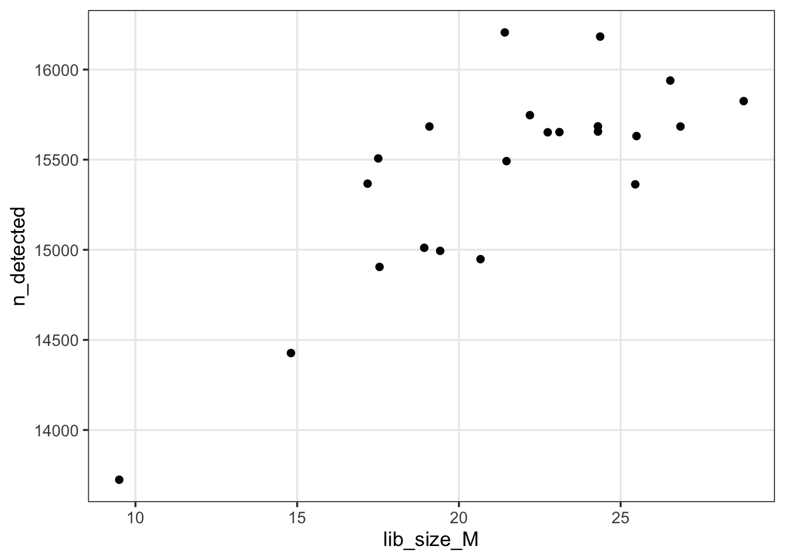
3.1 Number formatting with labels
Large numbers like the ones on the y-axis are easier to read with thousand separators. You can add these with the label_comma() function from the scales package, which was installed along with the tidyverse:
sample_stats |>
ggplot(aes(x = lib_size_M, y = n_detected)) +
geom_point() +
scale_y_continuous(labels = scales::label_comma())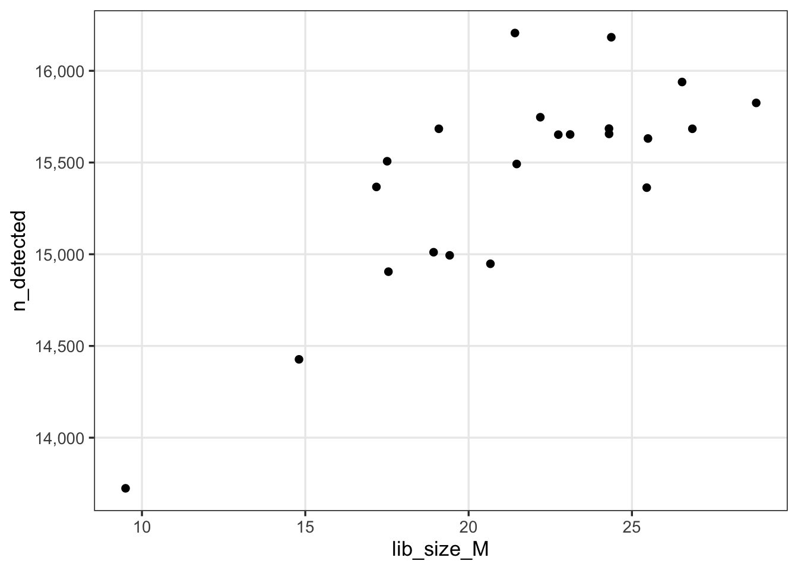
The scales:: prefix lets you use a function from a package without loading it. The scales package has similar functions for other formats, like label_percent() for percentages.
3.2 Starting an axis at 0 with limits
By default, each axis only covers the range of the data. So, in the plot above, the y-axis starts just below 14,000, which makes the differences in the number of detected genes look large. To make an axis start at 0, use limits = c(0, NA), where NA means “keep the default” for the upper limit:
sample_stats |>
ggplot(aes(x = lib_size_M, y = n_detected)) +
geom_point() +
scale_x_continuous(limits = c(0, NA)) +
scale_y_continuous(labels = scales::label_comma(), limits = c(0, NA))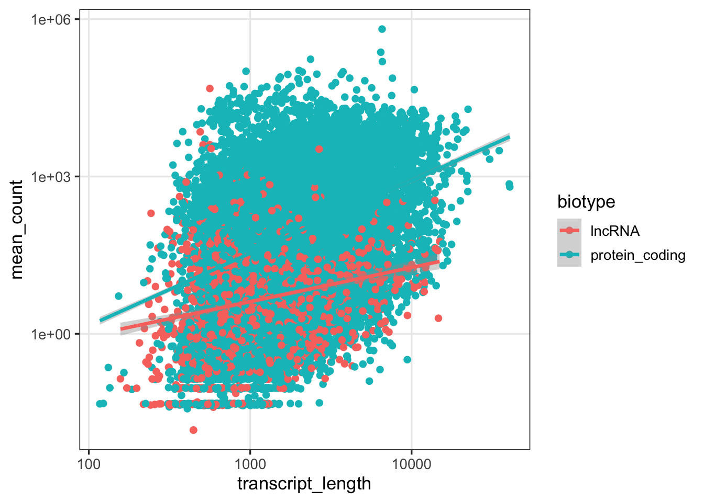
Now you can see that the number of detected genes varies little between samples, compared to the library size.
WarningLimits remove data
Limits that are narrower than the range of your data remove the data outside the limits from the plot, with a “Removed rows” warning that is easy to miss. To zoom in on part of a plot without removing any data, use coord_cartesian() instead, such as coord_cartesian(xlim = c(15, 25)).
3.3 Tick marks with breaks
With breaks, you choose where the tick marks and their labels go. For example, to have a tick mark every 5 million reads along the x-axis:
sample_stats |>
ggplot(aes(x = lib_size_M, y = n_detected)) +
geom_point() +
scale_x_continuous(limits = c(0, NA), breaks = c(0, 5, 10, 15, 20, 25, 30)) +
scale_y_continuous(labels = scales::label_comma(), limits = c(0, NA))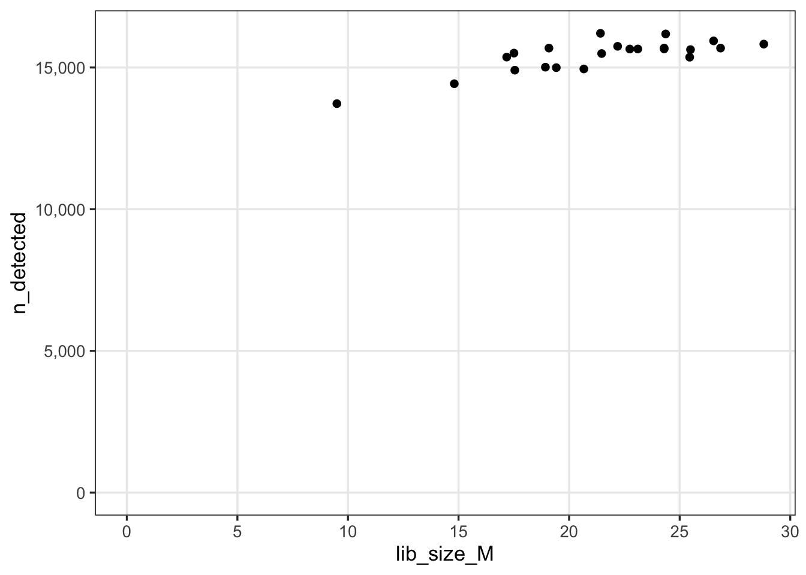
3.4 Removing the gap below bars with expand
Even with a limit of 0, there is a small gap between the axis and the start of the data, because ggplot2 by default expands each axis by 5% on both sides. This gap is especially noticeable in bar graphs — for example:
sample_stats |>
ggplot(aes(x = lib_size_M, y = sample_id)) +
geom_col() +
# Remove the horizontal grid lines (more on theme() below):
theme(panel.grid.major.y = element_blank())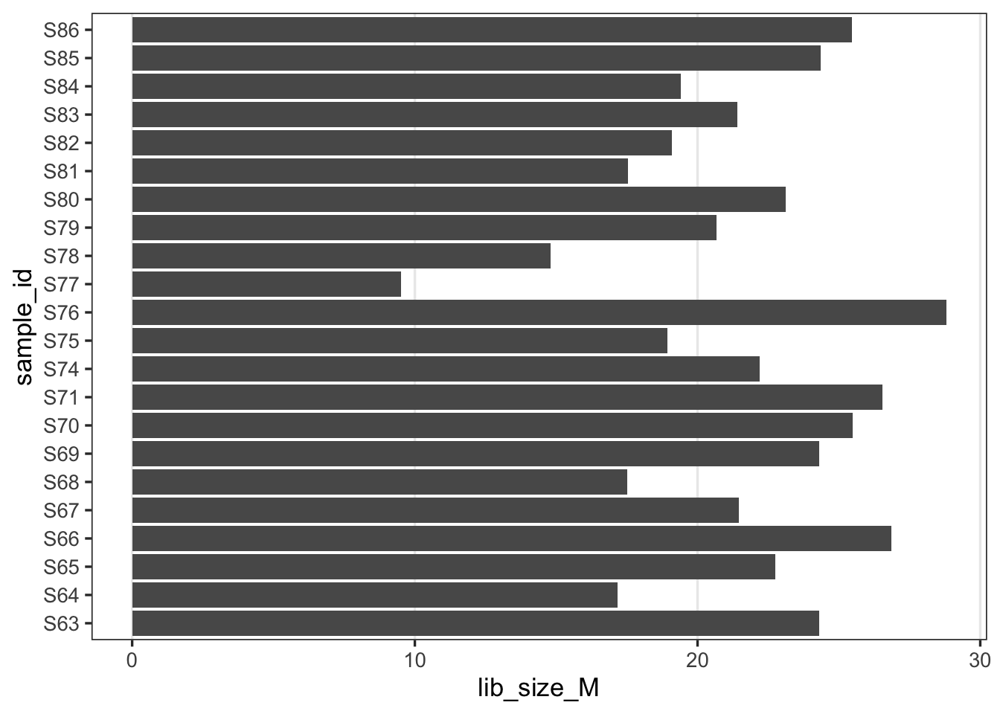
To remove the gap at the start of the axis, use the expand argument with the expansion() function. Its mult argument takes the expansion at the lower and upper end of the axis, as proportions of the axis range. Here, we’ll keep the default 5% at the upper end, so the longest bar doesn’t touch the edge of the plot:
sample_stats |>
ggplot(aes(x = lib_size_M, y = sample_id)) +
geom_col() +
scale_x_continuous(expand = expansion(mult = c(0, 0.05))) +
theme(panel.grid.major.y = element_blank())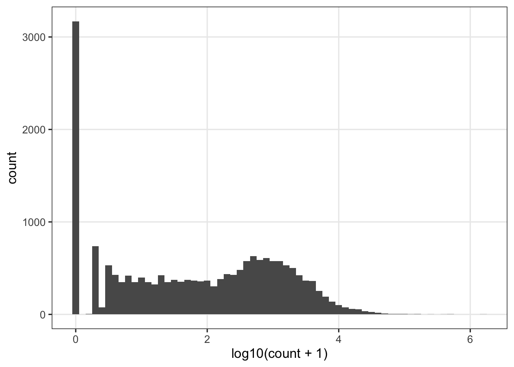
All of these arguments also work in the other axis scale functions, like scale_x_log10() and scale_y_log10(), and you’ll use them in many plots below.
4 Bar graphs with geom_bar()
In the lecture, you made bar graphs with geom_col(), where the bar heights are values that are already in your data. A closely related geom is geom_bar(), which instead counts the number of rows for each category.
For example, to plot the number of genes without any reads in each sample, you can keep only the rows of counts_long with a count of 0, and then use geom_bar(), which counts the remaining rows for each sample:
counts_long |>
filter(count == 0) |>
ggplot(aes(y = sample_id)) +
geom_bar() +
scale_x_continuous(
labels = scales::label_comma(),
expand = expansion(mult = c(0, 0.05))
) +
theme(panel.grid.major.y = element_blank())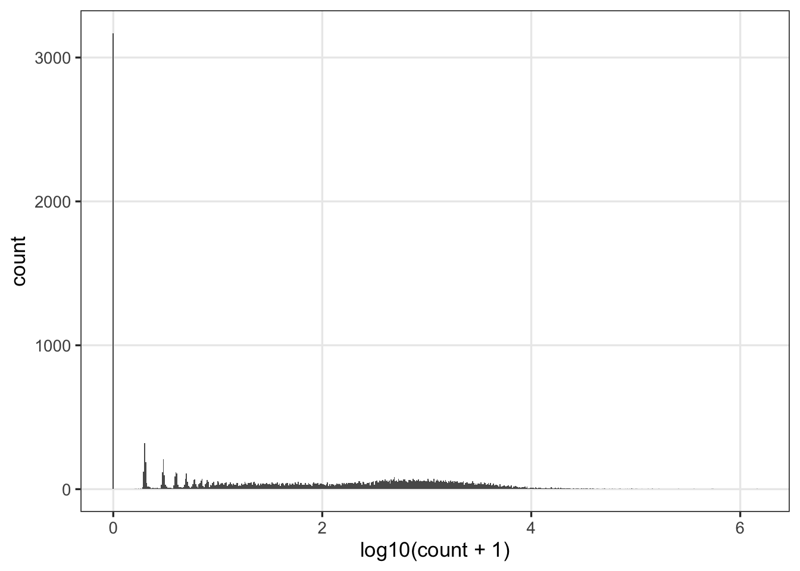
A notable feature of geom_bar() is that you don’t need to specify both an x and a y variable: you specify only the variable to count, and ggplot2 computes the other axis for you. Here, we put sample_id on the y-axis, which gives horizontal bars, so the sample ID labels don’t overlap.
What would this plot look like if you removed the filter() line?
All bars would have the same length: without the filter, counts_long has one row for every gene in every sample, so geom_bar() would count the total number of genes (18,855) for each sample.
So, in short:
- Use
geom_col()when your data frame already contains the numbers to plot. - Use
geom_bar()when you want to plot the number of rows per category.
5 Histograms
To see the distribution of a single numeric variable, use a histogram with geom_histogram(). It counts rows like geom_bar(), but first groups the values of a continuous variable into “bins”.
Let’s look at the distribution of gene counts in sample S63:
counts_long |>
filter(sample_id == "S63") |>
ggplot(aes(x = count)) +
geom_histogram(fill = "steelblue", color = "grey20") +
scale_y_continuous(
labels = scales::label_comma(),
expand = expansion(mult = c(0, 0.05))
) +
scale_x_continuous(labels = scales::label_comma())`stat_bin()` using `bins = 30`. Pick better value `binwidth`.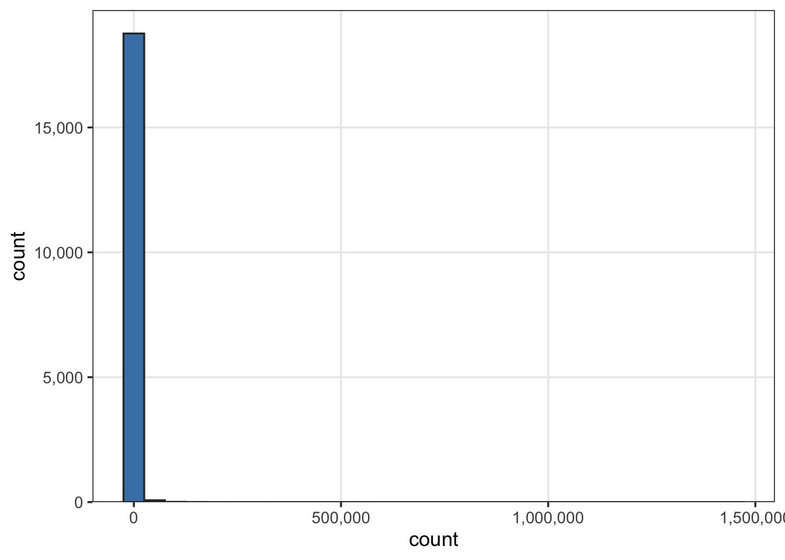
The message tells you that geom_histogram() used its default of 30 bins, and that you can pick a better bin width yourself, which we’ll do below.
This plot is not very informative: because a few genes have extremely high counts, nearly all genes end up in the first bin. Let’s make a few changes to improve it:
- For counts like these, a log scale works much better (
log10(count)). - Because
log10(0)is-Inf(negative infinity), we can add 1 to the counts first (log10(count + 1)), so that zero-count genes are not dropped from the plot. - We’ll set the width of the bins with
binwidthto get a more fine-grained view of the distribution.
counts_long |>
filter(sample_id == "S63") |>
ggplot(aes(x = log10(count + 1))) +
geom_histogram(binwidth = 0.1, fill = "steelblue", color = "grey20") +
scale_y_continuous(
labels = scales::label_comma(),
expand = expansion(mult = c(0, 0.05))
)
The bar at 0 shows the genes without any reads, and most other genes have between 10 (1 on the x-axis) and 10,000 (4 on the x-axis) reads.
Exercise: Histograms
Try a much smaller and a much larger
binwidth, like 0.01 and 1. What happens to the histogram?Click to see the solution
counts_long |> filter(sample_id == "S63") |> ggplot(aes(x = log10(count + 1))) + geom_histogram(binwidth = 0.01)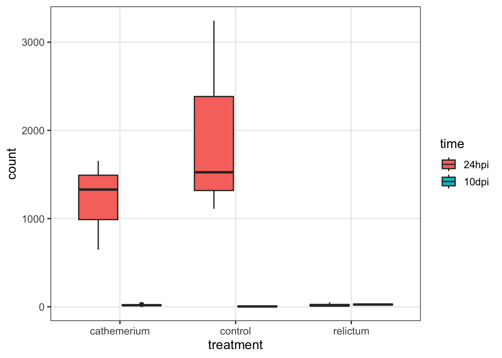
counts_long |> filter(sample_id == "S63") |> ggplot(aes(x = log10(count + 1))) + geom_histogram(binwidth = 1)
With very narrow bins, the histogram gets spiky and noisy, while with very wide bins, you lose the shape of the distribution. There is no single correct binwidth, so it’s worth trying a few.
Plot the histogram (with
binwidth = 0.1) for both sampleS63and sampleS77, which has the smallest library, and fill the bars bysample_id. How are the bars of the two samples arranged?Click to see the solution
counts_long |> # Keep the rows for either of the two samples: filter(sample_id %in% c("S63", "S77")) |> ggplot(aes(x = log10(count + 1), fill = sample_id)) + geom_histogram(binwidth = 0.1)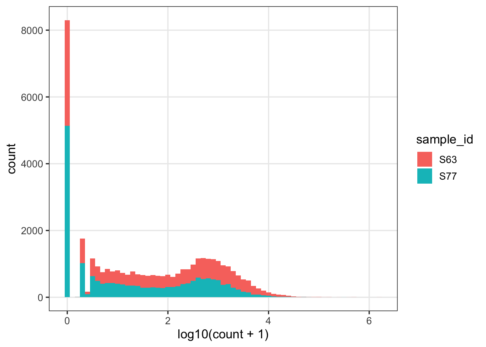
The bars of the two samples are stacked on top of each other, so the total height of each bar is the count across both samples.
Now, add
position = "identity"andalpha = 0.5insidegeom_histogram(). What does each of these two options do? And how do the distributions of the two samples differ?Click to see the solution
counts_long |> filter(sample_id %in% c("S63", "S77")) |> ggplot(aes(x = log10(count + 1), fill = sample_id)) + geom_histogram(binwidth = 0.1, position = "identity", alpha = 0.5)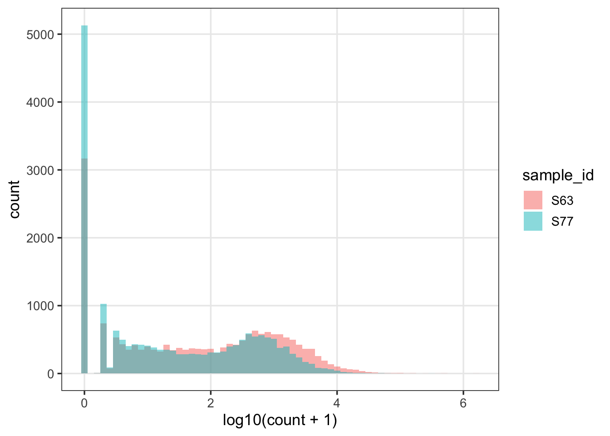
position = "identity"stops the stacking: each sample’s bars start at zero, so they overlap.alpha = 0.5makes the bars semi-transparent (alpharanges from 0, fully transparent, to 1, opaque), so you can see the overlapping bars.
The distribution of
S77is shifted to the left, and it has more genes with zero counts: with fewer reads in total, each gene tends to get fewer reads.
6 Faceting
When you map many variables in a single plot, it can get cluttered. An alternative is faceting: creating multiple panels (“facets”), one for each value of a categorical variable. There are two faceting functions:
facet_wrap()— Facet by a single categorical variable, with the panels “wrapped” into a rectangular layout.facet_grid()— Facet by one or two categorical variables, with the panels laid out in a grid of rows and columns.
For example, to make the count histogram from above for every sample:
counts_long |>
ggplot(aes(x = log10(count + 1))) +
geom_histogram(binwidth = 0.1) +
facet_wrap(vars(sample_id))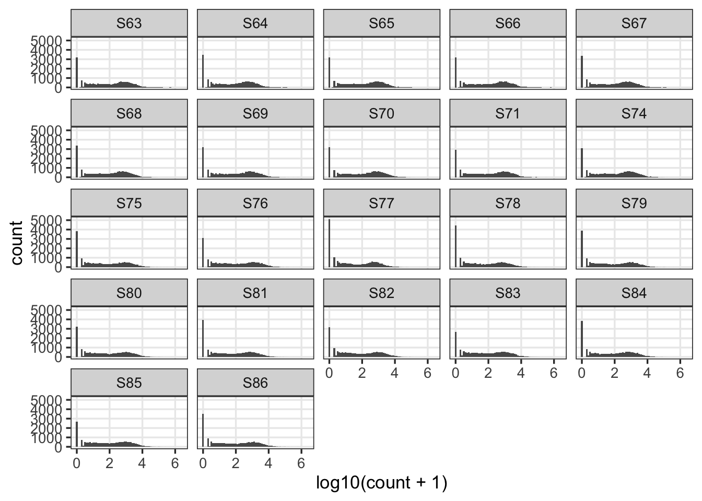
The distributions are similar for all samples, as you would expect, because most genes are expressed at similar levels in all samples. The clearest exception is S77, whose distribution is shifted to the left, as you saw in the exercise above, because of its small library.
Faceting works with any type of plot. For example, to make a box plot of the counts of a chymotrypsin gene (a digestive enzyme), LOC120423767, for each treatment, with one panel per time point:
counts_long |>
filter(gene_id == "LOC120423767") |>
ggplot(aes(x = treatment, y = count)) +
geom_boxplot(outlier.shape = NA) +
geom_jitter(width = 0.2) +
scale_y_continuous(labels = scales::label_comma()) +
facet_wrap(vars(time)) +
theme(panel.grid.major.x = element_blank())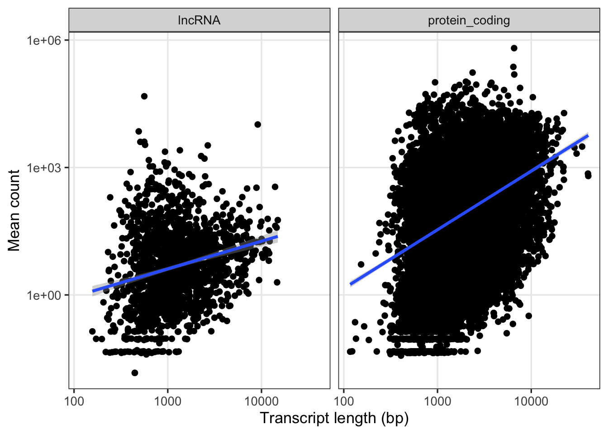
This gene is highly expressed at 24 hpi, except in the relictum samples, and expression is low in all treatments at 10 dpi.
Exercise: Faceting
Make a box plot of the counts of two genes: the chymotrypsin gene from above, and the cathepsin gene LOC120419697. Use facet_grid() with the genes in rows and the time points in columns. Hint: check the scales argument in the help for facet_grid(). How do the expression patterns of the two genes differ?
Click to see the solution
counts_long |>
filter(gene_id %in% c("LOC120423767", "LOC120419697")) |>
ggplot(aes(x = treatment, y = count)) +
geom_boxplot() +
scale_y_continuous(labels = scales::label_comma()) +
facet_grid(rows = vars(gene_id), cols = vars(time), scales = "free_y")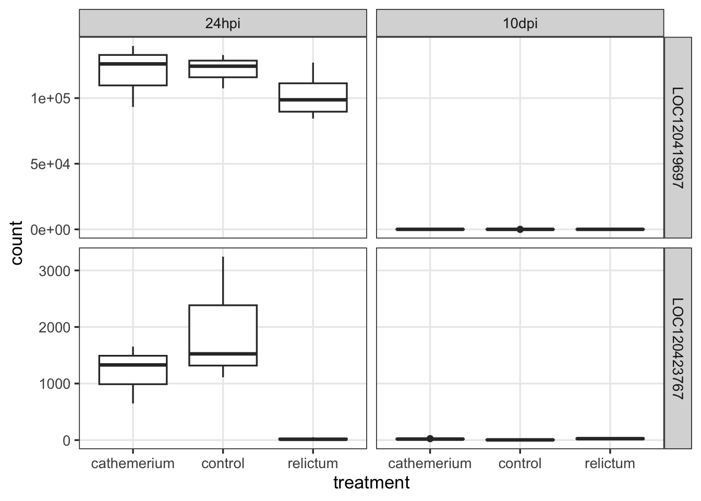
scales = "free_y" lets each row of panels have its own y-axis range, which is needed here because the cathepsin gene has far higher counts.
The cathepsin gene is very highly expressed at 24 hpi in all treatments, and barely expressed at 10 dpi, while the chymotrypsin gene is barely expressed in the relictum samples at 24 hpi.
7 Customizing themes
A theme controls the look of all parts of a plot that don’t show your data, like the text, the background, the grid lines, and the legend. Complete themes like theme_bw() set all of these at once, while the theme() function lets you change individual parts.
You’ve already used theme() on this page to remove grid lines, and the week 13 lecture also used it to move the legend:
# [Other plotting code] +
theme(
legend.position = "top",
panel.grid.minor = element_blank()
)7.1 How theme() works
Each argument name in theme() is a plot element, like axis.title or legend.position, and its value specifies the look of that element. For most elements, you use one of four element_*() functions:
| Function | Use for | Common arguments |
|---|---|---|
element_text() |
Text, like titles and axis labels | size, face, color, angle, hjust |
element_line() |
Lines, like grid lines and axis lines | color, linewidth, linetype |
element_rect() |
Rectangles, like backgrounds and borders | fill, color |
element_blank() |
Any element: removes it | (None) |
(A few elements take a plain value instead, like legend.position = "top".)
Element names go from general to specific, and more specific elements “inherit from” more general ones1. For example:
textchanges all text in the plotaxis.titlechanges the titles of both axesaxis.title.xchanges only the x-axis title
theme() only changes the elements you specify, and keeps everything else from the current theme, such as the default theme that you set with theme_set().
7.2 Grid lines (and backgrounds)
In addition to removing minor grid lines, which tend to make the plot look busy, it often makes sense to keep the major grid lines only for the axis that is most important to read.
For example, in a box plot with treatments on the x-axis, the vertical grid lines don’t add much — let’s remove them:
sample_stats |>
ggplot(aes(x = treatment, y = lib_size_M)) +
geom_boxplot() +
scale_y_continuous(limits = c(0, NA)) +
theme(panel.grid.major.x = element_blank())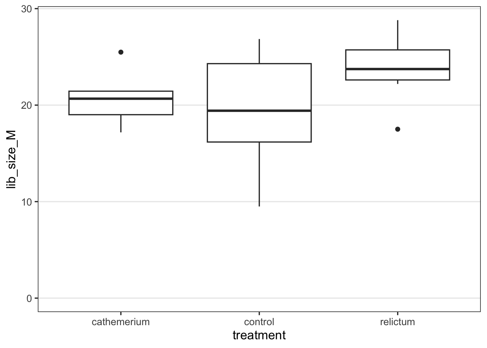
NoteGetting fancy with grid lines and backgrounds (Click to expand)
You can use element_rect() to change the background and borders of the plot. Here, we’ll make the horizontal grid lines dashed, give the plot panel a light gray background, and remove the panel border:
sample_stats |>
ggplot(aes(x = treatment, y = lib_size_M)) +
geom_boxplot() +
theme(
panel.grid.major.x = element_blank(),
panel.grid.major.y = element_line(color = "grey70", linetype = "dashed"),
panel.background = element_rect(fill = "grey95"),
panel.border = element_blank()
)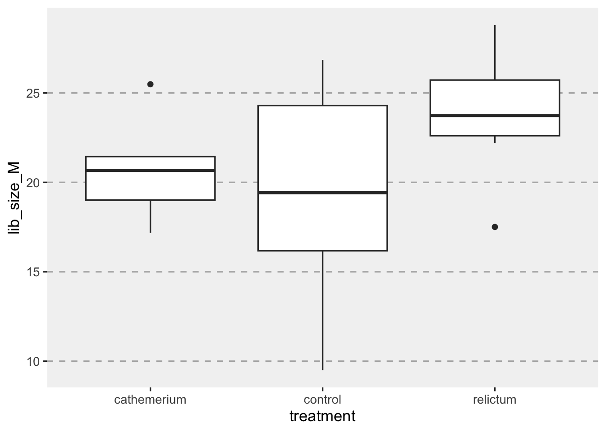
7.3 Text
To change the size of the plot title and the axis text, and to make the title bold:
sample_stats |>
ggplot(aes(x = lib_size_M, y = n_detected, color = treatment)) +
geom_point() +
scale_y_continuous(labels = scales::label_comma()) +
labs(title = "Detected genes vs. library size") +
theme(
plot.title = element_text(size = 18, face = "bold"),
# axis.title = the axis labels; axis.text = the numbers along the axes
axis.title = element_text(size = 15),
axis.text = element_text(size = 13)
)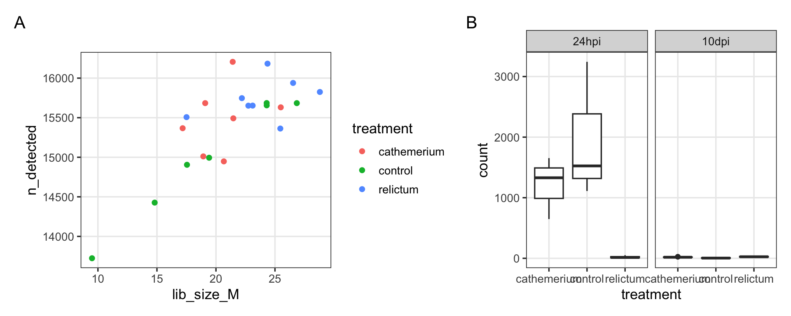
(The title is still centered, because the default theme you set earlier contains hjust = 0.5 for plot.title, and theme() only changed the size and font face.)
7.4 Rotating axis labels
When you have many categories on the x-axis, like sample IDs, the labels can overlap:
sample_stats |>
ggplot(aes(x = sample_id, y = lib_size_M, fill = treatment)) +
geom_col() +
scale_y_continuous(expand = expansion(mult = c(0, 0.05))) +
theme(panel.grid.major.x = element_blank())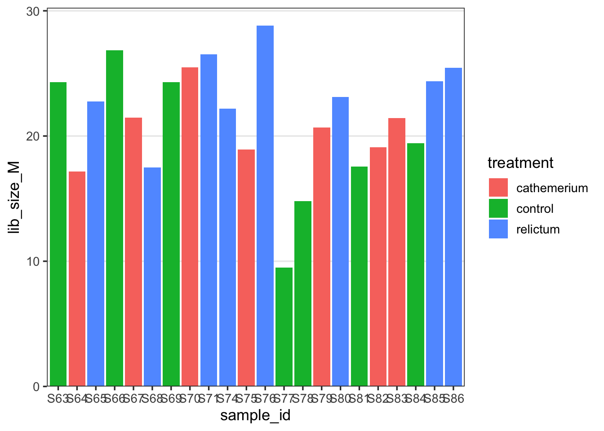
To fix this, rotate the labels with the angle argument of element_text():
sample_stats |>
ggplot(aes(x = sample_id, y = lib_size_M, fill = treatment)) +
geom_col() +
scale_y_continuous(expand = expansion(mult = c(0, 0.05))) +
theme(
panel.grid.major.x = element_blank(),
# hjust = 1 lines up the end of each label with its tick mark,
# and vjust = 0.5 centers each label on its tick mark
axis.text.x = element_text(angle = 90, hjust = 1, vjust = 0.5)
)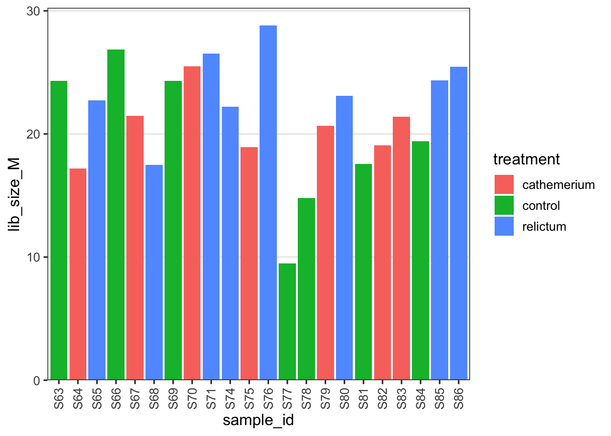
Alternatively, put the categories on the y-axis, as in the geom_bar() example above: with horizontal bars, the labels don’t need to be rotated and are easier to read.
7.5 The legend
By default, ggplot2 puts the legend on the right side of the plot. You can move it with the legend.position argument of theme(), with possible values "top", "bottom", "left", "right", or "none" (which removes the legend).
The legend title is the name of the mapped variable, here treatment. To change it, use labs() with the name of the aesthetic, like labs(color = "Treatment"), or labs(fill = ...) for a fill legend.
For example, to put the legend above the plot and capitalize its title:
sample_stats |>
ggplot(aes(x = lib_size_M, y = n_detected, color = treatment)) +
geom_point(size = 3) +
scale_y_continuous(labels = scales::label_comma()) +
labs(color = "Treatment") +
theme(legend.position = "top")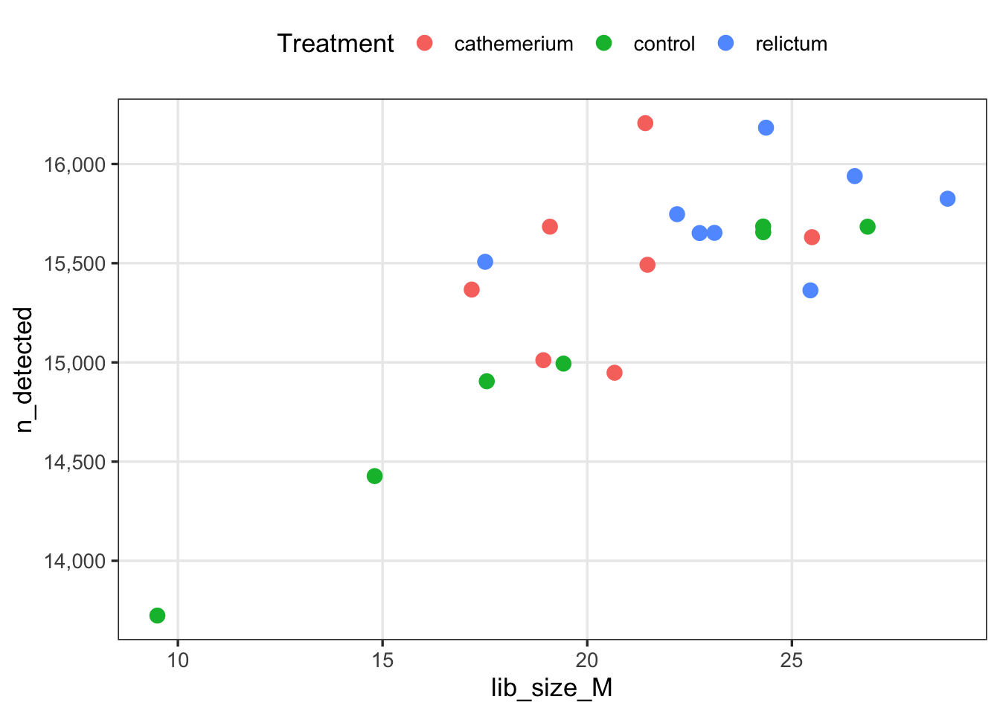
For all theme elements that you can change, see the theme() documentation .
8 Color palettes
You may not always be happy with the default colors that ggplot2 chooses for your plots. You can pick your own colors with scale_color_manual(), but that can be tedious if you have many categories. Instead, you can use ready-made color palettes, which several packages provide.
8.1 A starting plot
Before we look at color palettes, let’s make one change to our earlier scatter plot: we’ll fill the points while keeping the outline dark, which tends to look better and makes it easier to distinguish overlapping points.
To do this, we use the shape aesthetic to choose a point shape with a fill color, like shape 21 (see this overview of point shapes ):
sample_stats |>
ggplot(aes(x = lib_size_M, y = n_detected, fill = treatment)) +
geom_point(size = 4, shape = 21, color = "black") +
scale_y_continuous(labels = scales::label_comma())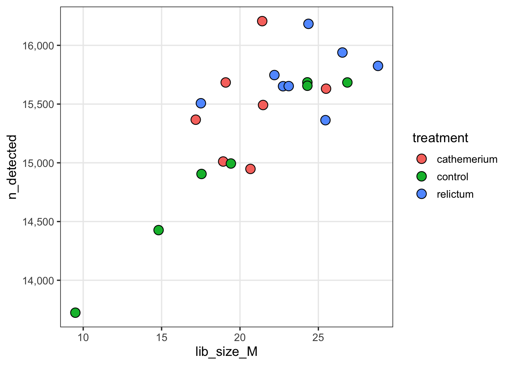
8.2 RColorBrewer and ggsci
One example is the RColorBrewer package that you installed in week 12, which has palettes like Dark2:

To use one of these palettes, use ggplot2’s scale_fill_brewer() function (you don’t need to load RColorBrewer for this). For example, to use the Dark2 palette for a scatter plot:
sample_stats |>
ggplot(aes(x = lib_size_M, y = n_detected, fill = treatment)) +
geom_point(size = 4, shape = 21, color = "black") +
scale_y_continuous(labels = scales::label_comma()) +
scale_fill_brewer(palette = "Dark2")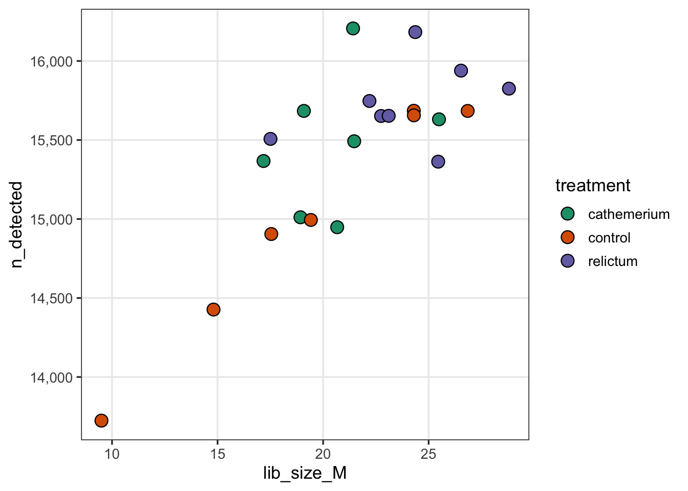
Another popular option is the ggsci package , which has palettes based on the colors used by scientific journals, such as scale_fill_npg() for Nature and scale_fill_lancet() for The Lancet.
Install and then load the package:
install.packages("ggsci")library(ggsci)Use its scale_fill_npg() function:
sample_stats |>
ggplot(aes(x = lib_size_M, y = n_detected, fill = treatment)) +
geom_point(size = 4, shape = 21, color = "black") +
scale_y_continuous(labels = scales::label_comma()) +
scale_fill_npg()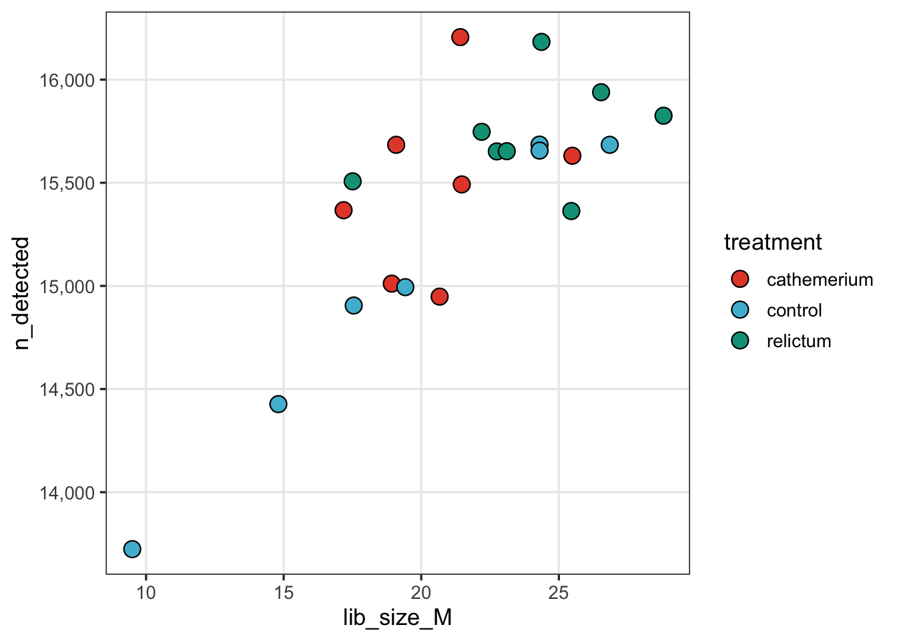
8.3 viridis palettes
Finally, ggplot2 itself includes the viridis palettes, whose colors stay distinguishable for colorblind readers and when printed in grayscale. Use scale_color_viridis_d() / scale_fill_viridis_d() for categorical variables like treatment, and scale_color_viridis_c() / scale_fill_viridis_c() for continuous variables.
Viridis is especially popular for heatmaps, which show a continuous variable with fill colors. For example, to make a heatmap of the counts of the 10 most highly expressed genes with geom_tile():
# Get the 10 genes with the highest mean count:
top_genes <- counts_long |>
summarize(mean_count = mean(count), .by = gene_id) |>
# slice_max() will return the rows with the highest values of mean_count:
slice_max(mean_count, n = 10)
counts_long |>
filter(gene_id %in% top_genes$gene_id) |>
ggplot(aes(x = sample_id, y = gene_id, fill = log10(count))) +
geom_tile(color = "grey50") +
scale_fill_viridis_c() +
theme(legend.position = "top")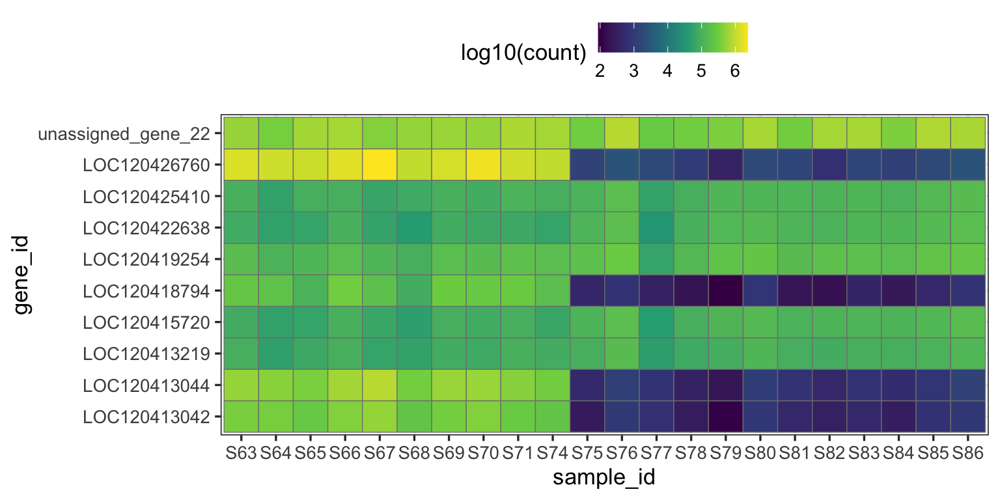
9 Combining plots into one figure
9.1 The patchwork package
Figures in papers often combine different plots as panels A, B, and so on. Faceting can’t do this, because all facets show the same type of plot and variables. Instead, you can use the patchwork package, which is not part of the tidyverse. Install and then load the package:
install.packages("patchwork")library(patchwork)First, save each plot as an object:
scatter_plot <- sample_stats |>
ggplot(aes(x = lib_size_M, y = n_detected, color = treatment)) +
geom_point() +
scale_y_continuous(labels = scales::label_comma()) +
theme(legend.position = "top")
box_plot <- counts_long |>
filter(gene_id == "LOC120423767") |>
ggplot(aes(x = treatment, y = count)) +
geom_boxplot() +
facet_wrap(vars(time))Then, combine them with | to put plots side by side (or / to put them on top of each other), and add panel labels with plot_annotation():
(scatter_plot | box_plot) +
plot_annotation(tag_levels = "A")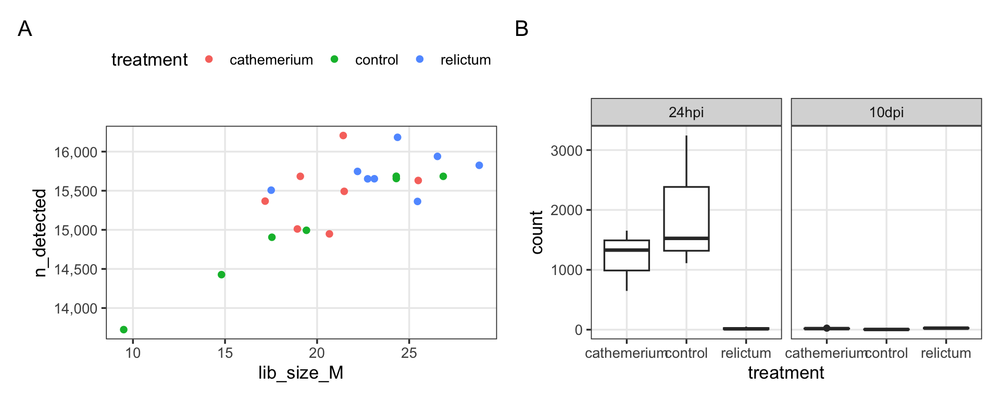
The result is a single plot object, which you can save to a file with ggsave() like any other plot.
9.2 Getting Claude’s help
Getting a multi-panel figure ready for a journal often takes a lot of small tweaks, which you can ask Claude to help with, for example:
Combine scatter_plot and box_plot into one figure with panels labeled A and B, color the boxes by treatment like the points in the scatter plot, and save it as a PDF that is 180 mm wide, the full page width in many journals.
Then, check the width, height, and units arguments in Claude’s ggsave() call, and open the PDF to check that all text is still readable at that size.
Footnotes
That is, if you set something for a general element, like
axis.title, it will also apply to the more specific elements, likeaxis.title.xandaxis.title.y, unless you set those specifically.↩︎